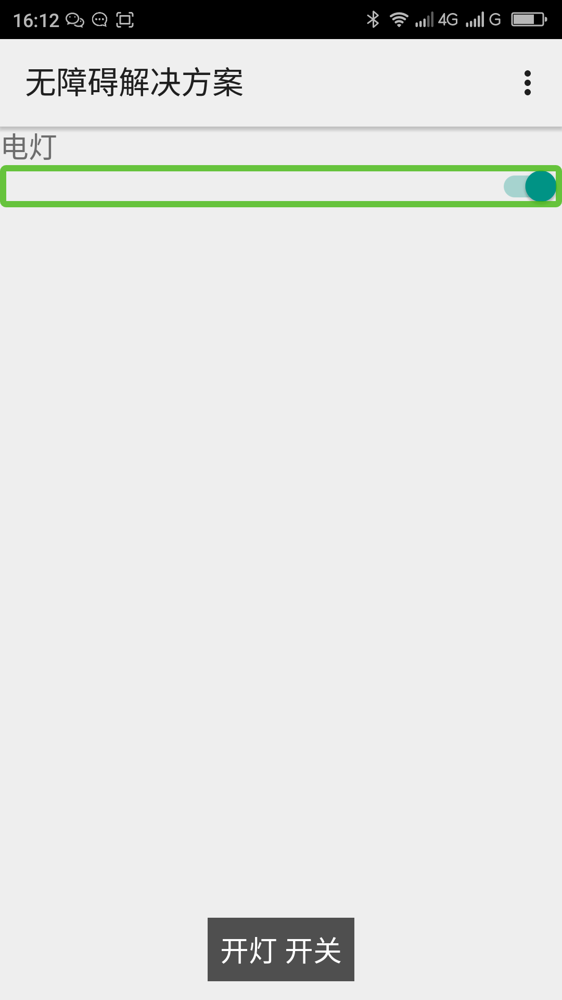

利用textOn、TextOff给开关控件（Switch）添加状态提示____20160526
【问题描述】
开关控件（Switch）有两个提示状态的属性android:textOn、android:textOff。这两个属性内的文本不会被显示到开关控件（Switch）上面，但是当用户使用屏幕阅读器的时候这两个属性会被朗读出来。开关（Switch）是开的时候朗读android:on中的内容，开关是关的时候朗读android:textOff的内容。开发者没有给这两个属性赋值的时候这两个属性分别被朗读为：“开”、“关”，用户很难通过这种提示了解打开或关闭了什么功能，或此开关控制的是什么。如果开发者提供android:textOn=”开灯”、android:textOff=”关灯”，这时候当开关（Switch）是打开的时候控件聚焦屏幕阅读器会朗读”开灯 开关“（“开关”是控件类型，屏幕阅读器自动识别的），点击从打开状态变成关闭状态的时候朗读为：“关灯”，这时候用户就能从这些描述清楚的知道此开关的功能。
注：android:textOn=””和android:textOff=””不会有任何状态的朗读，千万不要这样做，这样的话屏幕阅读器用户就不能知道开关的状态了。
【问题解决方案描述】
开关控件（Switch）用android:textOn属性来描述打开的状态，用android:textOff属性来描述关闭的状态，用户能很清楚的知道此开关的功能，如android:textOn是“开灯”,android:textOff是”关灯，这两个属性的文本不会显示出来，当用户使用屏幕阅读器的时候会朗读这两个属性，当开关打开的时候朗读android:textOn，开关关闭的时候朗读android:textOff。
【前后效果图对比】
|  | |
| 优化前，未设置textOn、textOff，聚焦switch控件，屏幕阅读器朗读“开启 开关” “关闭 开关”； | 优化后，设置textOn为开灯，textOff为关灯，聚焦switch控件，屏幕阅读器朗读“开灯 开关””关灯 开关”； |